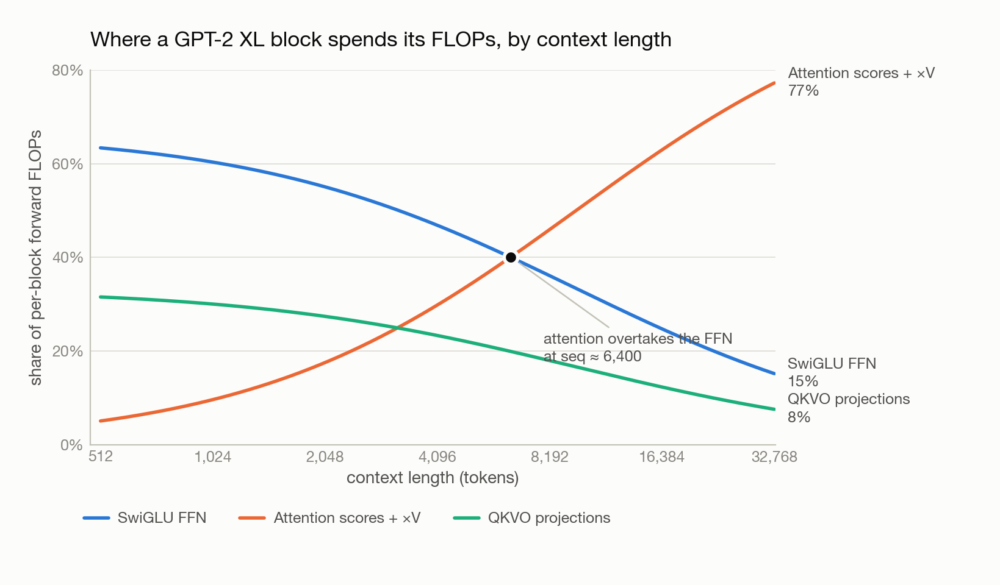

Building a Language Model from Scratch - Part 2: Where the FLOPs Actually Go
This is Part 2 of Building a Language Model from Scratch. In Part 1 we built a byte-level BPE tokenizer and found that its throughput alone puts a floor under how fast training can start. Now we count what the model itself costs.
Take GPT-2 XL, train it the way the original paper did — 400,000 steps at batch size 1,024 — and run it on a single H100 rated at 495 TFLOP/s, achieving a respectable 50% model FLOPs utilization. That run takes 4,854 hours. About 202 days.
Nobody trains that way, which is the point. Resource accounting is what turns “we need more GPUs” from a vibe into a number, and the numbers have a shape that is not obvious until you write them down.
The pieces we are counting
The architecture here is a modern pre-norm decoder-only Transformer, which differs from GPT-2 as published in several ways worth naming.
RMSNorm replaces LayerNorm: it rescales activations by their root-mean-square without subtracting the mean, dropping the bias term and one reduction. SwiGLU replaces the standard two-matrix MLP with three matrices — a gate projection, an up projection multiplied elementwise by the SiLU-activated gate, and a down projection. RoPE replaces learned positional embeddings by rotating query and key vectors by a position-dependent angle, so attention scores depend on relative position by construction. Attention itself is standard causal multi-head self-attention. And the block is pre-norm: normalization sits inside each residual branch, leaving the residual stream itself untouched from embedding to output.
Every one of those choices earns its keep in Part 3. Here they only matter as things that cost FLOPs.
1.64 billion parameters, 6.56 GB to load
Parameter counting is arithmetic, but it is arithmetic that catches errors. For GPT-2 XL’s shape — vocabulary 50,257, 48 layers, d_model 1,600, 25 heads, d_ff 4,288 — the parts are: a token embedding of vocab × d_model; per block, 2 · d_model RMSNorm gains, 4 · d_model² for the Q/K/V/output projections, and 3 · d_model · d_ff for SwiGLU; a final RMSNorm; and an untied LM head of vocab × d_model.
That totals 1.64 billion trainable parameters, or 6.56 GB at fp32 — just to have the weights resident, before a single activation exists.
(Real GPT-2 XL is 1.5 B. The gap is SwiGLU’s third matrix and the untied LM head, both of which this architecture adds.)
Attention is not where the compute goes
Counting a matmul of shape (m×n)·(n×p) as 2mnp FLOPs, and ignoring elementwise work like norms and softmax, one forward pass through one block at sequence length 1,024 breaks down like this:
| matmul | formula | FLOPs |
|---|---|---|
| Q, K, V projections | 3 · 2 · seq · d² |
15.73 B |
Attention scores QKᵀ |
2 · seq² · d |
3.36 B |
| Attention × V | 2 · seq² · d |
3.36 B |
| Output projection | 2 · seq · d² |
5.24 B |
| SwiGLU FFN | 6 · seq · d · d_ff |
42.15 B |
| per block | 69.84 B | |
| × 48 layers | 3.352 T | |
| LM head | 2 · seq · d · vocab |
164.7 B |
| total forward pass | 3.52 T |
Grouped, that is ~60% feed-forward, ~30% QKVO projections, ~10% attention proper. The two seq² matmuls that everyone means when they say “attention is quadratic” are the smallest line item in the block.
This is a useful corrective. At GPT-2-scale context lengths, a Transformer is a stack of position-wise matrix multiplies with a comparatively cheap mixing step bolted on. If you are optimizing kernels or estimating cost, the FFN is where the money is.
As a sanity check, the rule of thumb 2 · params · tokens gives 2 × 1.64B × 1024 ≈ 3.4 TFLOPs against our counted 3.52 — close enough to confirm the arithmetic, and a reminder that the rule of thumb is doing real work.
Bigger models make attention matter less
Repeating the count for the four GPT-2 sizes, holding sequence length at 1,024:
| model | d_model |
FFN | QKVO projections | attention scores |
|---|---|---|---|---|
| small | 768 | 54.5% | 27.3% | 18.2% |
| medium | 1,024 | 57.3% | 28.4% | 14.2% |
| large | 1,280 | 58.7% | 29.5% | 11.8% |
| XL | 1,600 | 60.3% | 30.0% | 9.6% |
Attention’s share halves from small to XL. The reason is in the formulas: projections and FFN scale as d_model², while the attention matmuls scale as seq² · d_model — only linear in width. Widen the model and the quadratic-in-width terms pull away.
So at fixed context length, scaling up makes attention relatively cheaper. Which is the exact opposite of the thing everyone knows about attention — and the next section is why.
Bigger context makes attention everything
Now hold GPT-2 XL fixed and push its context length from 1,024 to 16,384.
That is a 16× increase in sequence length. It is a 38× increase in FLOPs: 3.52 TFLOPs → 133.6 TFLOPs for a single forward pass. The projections, FFN, and LM head all scale linearly with seq (×16), but the attention score and value matmuls scale with seq² (×256), and they drag the total past linear.
The composition inverts completely. Attention’s share of a block goes from 9.6% to 63%:

Everything the previous section said stops being true somewhere around a context length of 6,400 tokens. Below that, you are building a matmul machine and attention is a rounding error. Above it, you are building an attention machine and everything else is overhead.
This single crossover explains a decade of systems work. FlashAttention, sliding-window and sparse attention, grouped-query and multi-query attention, KV-cache quantization — none of it would be worth the complexity at context 1,024, where attention is a tenth of the budget. All of it becomes unavoidable at 16k, 128k, 1M. Long context is not “the same model, but longer.” It is a different optimization problem, and the chart above is where it changes.
Memory: three parameters’ worth of state per parameter
FLOPs decide how long training takes; memory decides whether it runs at all. Training with AdamW in fp32 costs 4P bytes for parameters, 4P for gradients, and 8P for the optimizer’s first and second moments — 16 bytes per parameter, before activations.
For GPT-2 XL that fixed cost is 26.24 GB. Adding the activation term — the per-layer norms, projections, attention scores, and SwiGLU intermediates, which scale with batch size — gives total memory as:
16.37 · batch_size + 26.24 GB
On an 80 GB H100, solving 16.37 · B + 26.24 ≤ 80 gives B ≤ 3.28. The maximum batch size is 3.
Three sequences. On a flagship datacenter GPU. That is why nobody trains a 1.6 B model on one card, and why the very first thing a real training stack reaches for is mixed precision, activation checkpointing, an optimizer whose state does not cost 8P, and — when those run out — splitting the model across devices.
Which is precisely where the Parallelism in AI series picks up: data parallelism and FSDP to shard that 26 GB of optimizer state, pipeline parallelism to split the 48 layers across nodes, and tensor parallelism to split the individual matmuls this post spent its time counting.
Next: Part 3 — Training Dynamics: What Actually Moved the Loss, in which four architecture choices get ranked by how much validation loss each one is worth.
References
- Zhang, B., Sennrich, R. (2019). Root Mean Square Layer Normalization. arXiv:1910.07467
- Shazeer, N. (2020). GLU Variants Improve Transformer. arXiv:2002.05202
- Su, J., et al. (2021). RoFormer: Enhanced Transformer with Rotary Position Embedding. arXiv:2104.09864
- Kaplan, J., et al. (2020). Scaling Laws for Neural Language Models. arXiv:2001.08361 — the source of the
2 · params · tokensrule of thumb. - Dao, T., et al. (2022). FlashAttention: Fast and Memory-Efficient Exact Attention with IO-Awareness. arXiv:2205.14135
- Loshchilov, I., Hutter, F. (2017). Decoupled Weight Decay Regularization. arXiv:1711.05101 — AdamW.
- Stanford CS 336: Language Modeling from Scratch